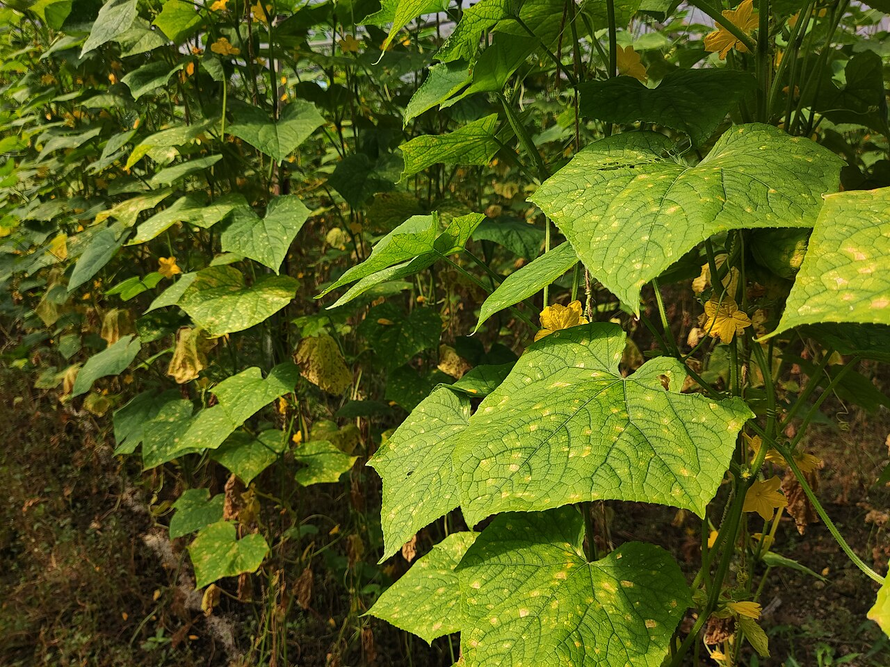

downy-mildew.jpg外部实拍 / 遥感参考，非本农场采集Clemson University - USDA Cooperative Extension Slide Series, , United States原始来源 · CC BY 3.0
File:Downy mildew on leaves of Cucumis sativus.jpg外部实拍 / 遥感参考，非本农场采集Wee Hong原始来源 · CC BY-SA 4.0
File:Winged Soybean Aphid (15536218135).jpg外部实拍 / 遥感参考，非本农场采集NY State IPM Program at Cornell University from New York, USA原始来源 · CC BY 2.0